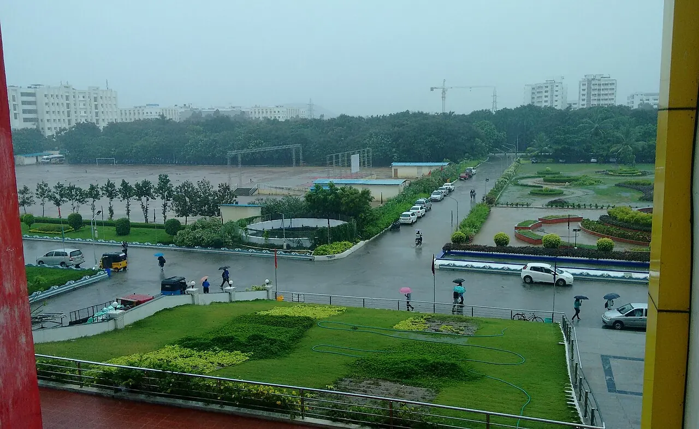

Engineering
Undergraduate engineering admissions use SRMJEEE, the SRM Joint Engineering Entrance Examination. Postgraduate applicants should check the process for their chosen qualification.
Home / Admissions
Your next chapter starts with a subject you care about. Find your route to studying at SRM.
Find your route
The process depends on your qualification and subject. Start with the route that applies to you.
Undergraduate engineering admissions use SRMJEEE, the SRM Joint Engineering Entrance Examination. Postgraduate applicants should check the process for their chosen qualification.
Medical and dental admissions follow the applicable NEET route. Counselling and eligibility requirements depend on the qualification.
Management, law, science, humanities, agriculture and health-related subjects have programme-specific routes. The admissions team can help you identify the right one.
Choose your programme before checking its requirements. Keep your documents ready for the formal application process.
Compare academic areas and choose the level of study that fits your previous qualifications.
Explore academicsConfirm eligibility, entrance examinations, counselling and the application schedule for your chosen programme with admissions.
Gather the documents requested for your programme. Check that your name and other details match across your records.
Use the application channel confirmed by admissions. Keep your application number and payment acknowledgement for follow-up.
Get application helpA preparation checklist. Your programme may require additional documents.
Fees and scholarship rules vary by programme and admission route. Confirm the current information before making a payment.
Ask about tuition, registration, hostel and other applicable charges for your selected programme. Use the current fee schedule supplied by admissions.
SRM offers scholarship and aid routes. Ask which schemes apply to your programme, the documents required and any renewal conditions.
International applicants have a separate admissions route. Get advice for your qualification and circumstances.
Discuss qualification equivalence, programme requirements and the documents needed for admission before planning travel.
Start here, then speak to the admissions team about your own application.
No. SRMJEEE is an engineering admission route. Medicine and dentistry follow the relevant NEET process, while other programmes have their own requirements.
Ask admissions for the current schedule and fee information for your exact programme and campus. Dates and costs are not interchangeable across programmes.
SRM has postgraduate and research study routes. Select your intended level above, then discuss the required qualification and process with admissions.
This page helps you choose a route and prepare. Your formal application and any payment take place through the channel confirmed by SRM admissions.
The right admissions team can help you move from a question to a clear next step.
Discuss your intended programme and application route.
Business, science, humanities, law, health sciences and hotel management.